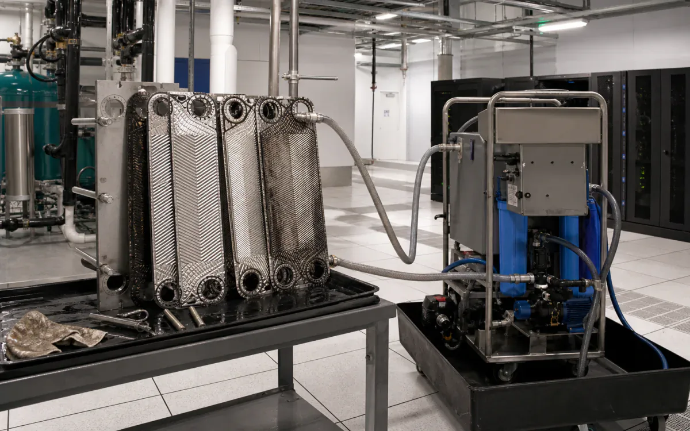
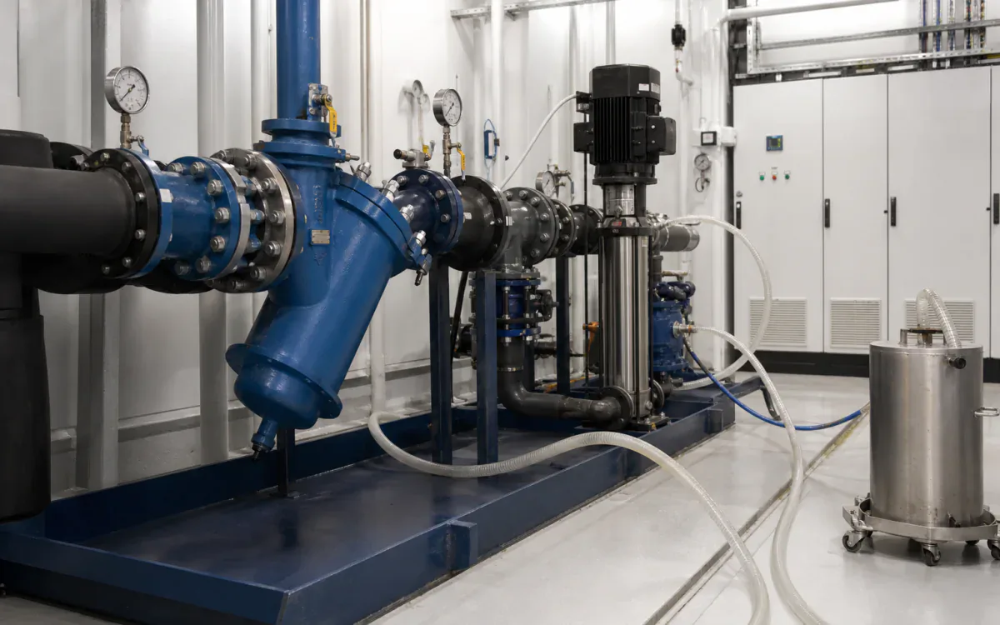

Water-treatment chemistry for uptime teams under compliance pressure.
Cooling tower scale, Legionella compliance, green mandates, and uptime risk put data-center water treatment under procurement review.
- CleanCooling towers, plate heat exchangers, condenser-water piping, closed loops, strainers, and mechanical-room coils
- RemoveCarbonate scale, iron oxide, corrosion product, silt, and water-side organic fouling
- MethodIsolated side-stream or recirculating clean, controlled rinse, and documented water-treatment restart
- BoundaryUse MOP/SOP/EOP change control, redundancy approval, leak containment, LOTO, and zero open chemical work above live electrical or IT equipment.
- Open task controls and documents
Why VertKleen fits Data Centers.
Data centers cannot let scale, biological growth, or hazardous chemical handling become an uptime risk. WaterSafe60 covers scale and corrosion control, HCR handles acid-cleaning and passivation work, and Descaler gives facilities teams an acid-free path for coils, plumbing, and heat-transfer surfaces.
Review field evidenceWhat Data Centers buyers need documented first.
Cooling tower scale, Legionella compliance, and green mandates all sit inside the same uptime conversation for data-center facilities teams.
Bundle: WaterSafe60 for scale and corrosion control, HCR for passivation and heavy scale, Descaler for acid-free heat-transfer cleaning.


VertKleen products for Data Centers.
VertKleen options for Data Centers workflows.
Restore heat-transfer performance in isolated cooling-water assets while keeping chemistry away from energized IT space.
Task controls first. Product choice follows the asset, deposit, materials, operating window, and discharge route.
- Task
- Restore heat-transfer performance in isolated cooling-water assets while keeping chemistry away from energized IT space.
- Asset / substrate
- Cooling towers, plate heat exchangers, condenser-water piping, closed loops, strainers, and mechanical-room coils
- Soil / deposit
- Carbonate scale, iron oxide, corrosion product, silt, and water-side organic fouling
- Starting chemistry
- WaterSafe60, VertKleen CIP HCR, VertKleen Descaler
- Concentration
- Set descaler concentration from the current label/user guide, deposit analysis, metallurgy, and loop volume; water-treatment dose remains site-engineered.
- Process controls
- Trend inlet/return temperature, flow, pressure drop, solution pH, iron or hardness response, contact time, agitation/recirculation, and rinse conductivity.
- Shutdown / containment
- Use MOP/SOP/EOP change control, redundancy approval, leak containment, LOTO, and zero open chemical work above live electrical or IT equipment.
- Verification endpoint
- Recovered approach temperature or pressure drop, stable rinse pH/conductivity, clean strainer inspection, and no leak or alarm after controlled restart.
Review the current safety and application file.
Confirm revision, product identity, material compatibility, and application scope before site approval.
Bring us your Data Centers cleaning task.
The request opens with asset, soil, operating conditions, materials, wastewater route, and buying deadline already prompted.